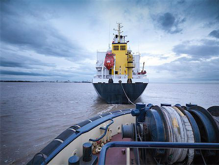

This blog addresses the marine industry professionals involved in the towing of the vessel. It could be towing of deck loading dump barge, barge with deck mounted heavy lift crane or if you are looking for hiring a towing tug for non-propelled vessel. This brief blog will give readers an idea of what industry guideline says for the requirement of bollard pull capacity when you have to put your asset on the adventure of the towing.
The idea is to promote innovation and apply advanced inspection technologies to enable a more predictive and less intrusive survey process, as well as a safer work environment at the surveying site.
First thing first, when you are hiring a tug or deciding the combination of the spread, the suitability of the combination is the major aspect to look into. One of the main elements is the bollard pull capacity of the towing tug and the required pull for the towed vessel. Every towing tug in the market will be displayed with the bollard pull capacity and very few looks into the age of the tug or the year when the bollard pull test was done.
As per industry guideline, the bollard pull test certificate should not be more than 10 your old. But this is not the hard and fast fixed rule. Even if the bollard pull certificate is older than 10 years, tugs approved, and active pull capacity should be reduced by 1% for each year in order to estimate the available bollard pull of the towing tug.
Now since it is advisable to have the bollard pull test done in some time of the tugs life to estimate her available towing capacity, this can also be estimated by her certified BHP of the main engine if the Bollard pull test certificate is not available as per the Nobel Denton Guide line. The guideline state that

Approved Bollard Pull for tugs over 10 years old, without
a bollard pull certificate less than 10 years old, may be the greater
of: • The certified value reduced by 1% per year of age
since the BP test, or
• 1 tonne/100 (Certified) BHP reduced by 1% per year of age greater
than 10.
Now when you arrived at what is the available bollard pull capacity of the tug, the second stage is to estimate how much is the bollard pull requirement of the towed unit/vessel. Rightly saying this stage could be vice-versa if you have the towed unit and you are looking for the towing tug. It becomes more practical to estimate the Required Bollard Pull of the towed vessel and then approach the market for suitable tug and look into her acceptable bollard pull capacity.
To estimate the Required Bollard Pull of the towed vessel the elements which plays the role is the route of the spread, the weather they could face, the parameters of the towed vessel etc. Estimating the required bollard pull becomes complex since there is no approved empirical formula to derive the value. It is a combination of multiple resistance that the towed unit and the towing unit will encounter under the weather condition by way of wind, wave, swell and current. It is best advices to approach Marine Warranty Surveyor with the team of Engineers who can calculate the required bollard pull and document it for you if required.
We at Constellation Marine Services have skilled and experience combination of Master Marine and Engineers who can so the combination suitability survey and estimate the Required Bollard Pull for your towed vessel.